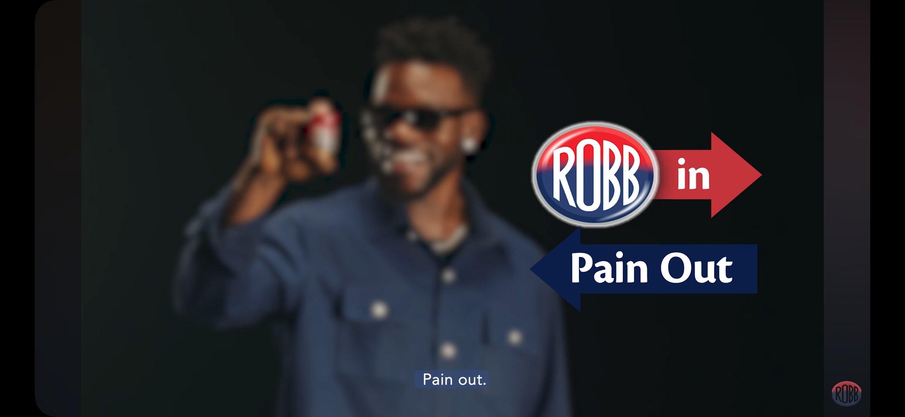

PR · Talent
Setting the Pace for Swift Ones
For Martell Swift Ones, we found the right faces, built real relationships, supported Swift Diaries on set, and pushed content across platforms with precision.
We have worked with hundreds of brands across diverse sectors to create campaigns that audiences remember, talk about and love.
For Martell Swift Ones, we found the right faces, built real relationships, supported Swift Diaries on set, and pushed content across platforms with precision.

For Martell x AMVCA, we guided engaging activations and stretched the energy across the country through PR and media.

For Essence Film Festival, we shaped a locally grounded campaign, curated resonant speakers, and drove press engagement with focus.

For Sanlam-Allianz Nigeria, we designed a launch experience that carried brand storytelling, technical execution, media, hospitality, and executive presence.

For Olori Atuwatse, we amplified watch parties and activations through PR, media visibility, and thoughtful guest coordination.

For Chivas Regal, we amplified watch parties and activations through PR, media visibility, and thoughtful guest coordination.

For Joy Beauty x Tomike Adeoye, we balanced clear brand messaging with authentic influencer storytelling.

For Adesuwa Okunbo Rhodes, we developed and amplified a strategic narrative centred on private equity leadership, women empowerment, and entrepreneurship to strengthen her positioning across both business and public audiences.

We turned the volume up where it counted, driving visibility and securing media coverage that actually moved the needle.

For Daniel Etim Effiong, we positioned him as more than an actor by building a multidimensional public identity that expands his relevance across entertainment, fashion, lifestyle, and brand partnerships.
.jpg)
For Lagos State Safety Commission, we shaped the Safety First campaign into practical messaging, clear pillars, and a usable execution direction.

For The Herd Movie, we drove PR, media, guest listing, and attendance for a premiere that landed with impact.

For the PZ: Robb x Broda Shaggi campaign, the brand needed to bridge the gap between a legacy product and a high-energy comedic icon without losing credibility or cultural relevance.
.jpg)
For Pernod, we kept a close watch on performance across platforms, tracking how content landed and where it could go further.

For Snow White, our events team took full control of the guest journey, from invitations and confirmations to on-ground coordination.